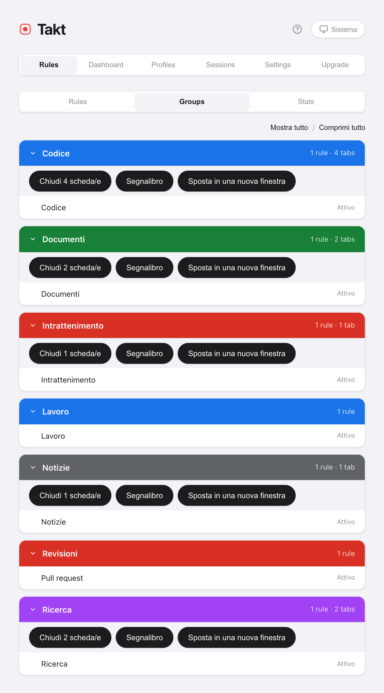

In breve: Takt raccoglie tutte le azioni sulle schede in blocco in un unico popup e dietro tre scorciatoie predefinite. Alt+Shift+G raggruppa, Alt+Shift+U separa, Alt+Shift+C comprime.
- Free: Raggruppa, Separa, Comprimi, Espandi, Chiudi duplicati, Ordina per dominio (finestra corrente), il riquadro Tabs.
- Premium: chiudere, aggiungere ai segnalibri o spostare un intero gruppo, ordinare tutte le finestre, comprimere le altre finestre, un gruppo "Altri" per le schede rimaste.
- Tutto avviene sul tuo computer. Nessun account.
Cosa fa ogni pulsante?
Il riquadro Home del popup ha un blocco Azioni rapide. Raggruppa, Separa, Comprimi, Espandi e Chiudi duplicati diventano grigi quando non avrebbero effetto, quindi il blocco mostra anche lo stato delle tue schede.

| Pulsante | Cosa fa | Ambito | Piano |
|---|---|---|---|
| Raggruppa schede | Mette le schede nei gruppi secondo le tue regole, per categoria o con l'IA | Tutte le finestre | Free |
| Separa tutto | Elimina tutti i gruppi, tiene tutte le schede | Tutte le finestre | Free |
| Comprimi tutto | Chiude ogni gruppo fino alla sua etichetta | Tutte le finestre | Free |
| Espandi tutto | Apre tutti i gruppi | Finestra corrente | Free |
| Chiudi duplicati | Chiude gli URL ripetuti, tiene la prima copia | Finestra corrente | Free |
| Ordina per dominio | Mette una accanto all'altra le schede dello stesso sito | Finestra corrente (Free), tutte le finestre (Premium) | Free / Premium |
Raggruppa schede segue la modalità di raggruppamento scelta sopra. Nelle modalità Categoria e IA il piano gratuito crea fino a 5 gruppi per esecuzione. Scopri di più su il raggruppamento con le regole e il raggruppamento per categoria o con IA.
Come riordino una finestra in disordine con quattro clic?
- Chiudi duplicati. Le schede ripetute in questa finestra si chiudono. Resta la copia più a sinistra. Farlo per primo significa non raggruppare mai le copie.
- Raggruppa schede. Ogni scheda che corrisponde finisce nel suo gruppo.
- Ordina per dominio. Dentro ogni gruppo, e tra le schede non raggruppate, le schede dello stesso sito si mettono in fila. L'ordinamento non sposta mai una scheda dentro o fuori da un gruppo.
- Comprimi tutto. Ogni gruppo si chiude fino alla sua etichetta colorata.
Chiudi duplicati considera uguali due URL secondo la tua impostazione di confronto degli URL. Quella predefinita ignora il #frammento, un www. iniziale, la barra finale e l'ordine dei parametri di query.
Quali sono le scorciatoie da tastiera?
| Scorciatoia | Azione | Piano |
|---|---|---|
| Alt+Shift+G | Raggruppa tutte le schede | Free |
| Alt+Shift+U | Separa tutte le schede | Free |
| Alt+Shift+C | Comprimi tutti i gruppi | Free |
| Alt+Shift+Space | Cambio rapido: cerca qualsiasi scheda e passaci | Premium |
| Nessuna per impostazione predefinita | Espandi tutti i gruppi | Free |
Chrome permette a un'estensione di proporre al massimo quattro scorciatoie, quindi Espandi tutto non ne ha una. Assegnale un tasto in chrome://extensions/shortcuts. Lì puoi cambiare anche le altre quattro.
Come vedo tutte le schede aperte in un unico elenco?
Apri il riquadro Tabs nel popup. Elenca le schede di tutte le finestre sotto il nome del loro gruppo, dalla A alla Z, con le schede non raggruppate in fondo. Scrivi per filtrare per titolo o URL. Fai clic su una scheda per andarci. Questo riquadro è gratuito.
Posso chiudere, aggiungere ai segnalibri o spostare un intero gruppo?
Sì, con Premium. Tre azioni lavorano sul gruppo come un'unità:
- Chiudi. Chiude le schede del gruppo. Le schede fissate restano aperte. La vista Groups ti chiede prima di confermare.
- Segnalibro. Salva il gruppo in una cartella "Takt Bookmarks". Le schede restano aperte. Richiede l'autorizzazione facoltativa ai segnalibri.
- Sposta in una nuova finestra. Mantiene nome, colore e stato compresso del gruppo.
Le trovi in Opzioni → Rules → Groups, oppure fai clic destro su una pagina e apri Azioni di gruppo. Il menu del clic destro può anche spostare il gruppo in un'altra finestra già aperta.

I gruppi possono comprimersi da soli?
In tre modi, tutti disattivati finché non li attivi tu:
- Per regola. Spunta Auto-collapse group nell'editor di regole. Un nuovo gruppo creato da quella regola parte compresso, a meno che non contenga la scheda che stai guardando. Free.
- Nella stessa finestra. Settings → Tab Groups → Auto-collapse other groups on expand. Apri un gruppo e gli altri di quella finestra si comprimono. Free.
- Tra finestre. Auto-collapse groups in other windows when switching focus. Cambia finestra e, dopo 300 ms, i gruppi di tutte le altre finestre si comprimono. Premium.

Cosa succede alle schede che nessuna regola prende?
Restano fuori dai gruppi. Con Premium, attiva Others catch-all group e Raggruppa schede raccoglie tutte le schede rimaste in un gruppo grigio "Altri". Le schede fissate e le pagine chrome:// non vengono toccate. Eseguire di nuovo Raggruppa schede riusa lo stesso gruppo Altri. Vale in modalità Per regole.
Cosa questi pulsanti non fanno
- Ordina per dominio agisce una volta sola. Le nuove schede non vengono tenute in ordine. Inoltre confronta le ultime due parti del nome host, quindi
example.co.ukviene ordinato comeco.uk. - Chiudi duplicati resta in una finestra. Una copia aperta in un'altra finestra non viene toccata.
- Le azioni di gruppo stanno nel menu della pagina. Fai clic destro sulla pagina, non sulla barra delle schede.
- Raggruppa schede ha bisogno di un criterio. In modalità Per regole, le schede che nessuna regola prende restano sparse, a meno che Altri non sia attivo.
Due clic da schede sparse a una fila ordinata di gruppi.
Aggiungi Takt a Chrome, è gratisDomande frequenti
Quali sono le scorciatoie da tastiera predefinite di Takt?
Alt+Shift+G raggruppa, Alt+Shift+U separa, Alt+Shift+C comprime e Alt+Shift+Space apre il Cambio rapido (Premium). Espandi tutto non ha un tasto predefinito. Assegnane uno in chrome://extensions/shortcuts.
Quale scheda tiene Chiudi duplicati?
La prima copia nell'ordine della barra delle schede, partendo da sinistra. Le copie successive nella finestra corrente si chiudono. La tua impostazione di confronto degli URL decide cosa conta come stesso URL; per impostazione predefinita il #frammento viene ignorato.
I pulsanti per riordinare sono gratuiti?
Raggruppa, Separa, Comprimi, Espandi, Chiudi duplicati, il riquadro Tabs e la compressione automatica nella stessa finestra sono gratuiti. Ordina per dominio è gratuito per la finestra corrente. Premium ($3/mese o $30/anno) aggiunge l'ordinamento in tutte le finestre, le azioni di gruppo, la compressione automatica tra finestre e il gruppo Altri.
Posso chiudere un intero gruppo di schede in una volta?
Con Premium, sì: dalla vista Groups nelle opzioni di Takt, o da Azioni di gruppo nel menu del clic destro sulla pagina. Chiudi salta le schede fissate e la vista Groups ti chiede prima di confermare.